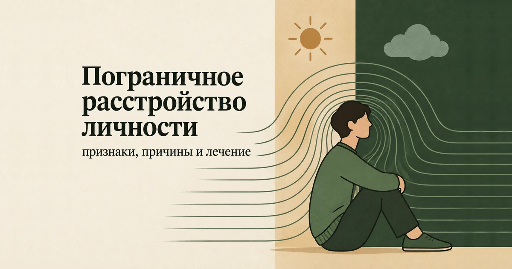
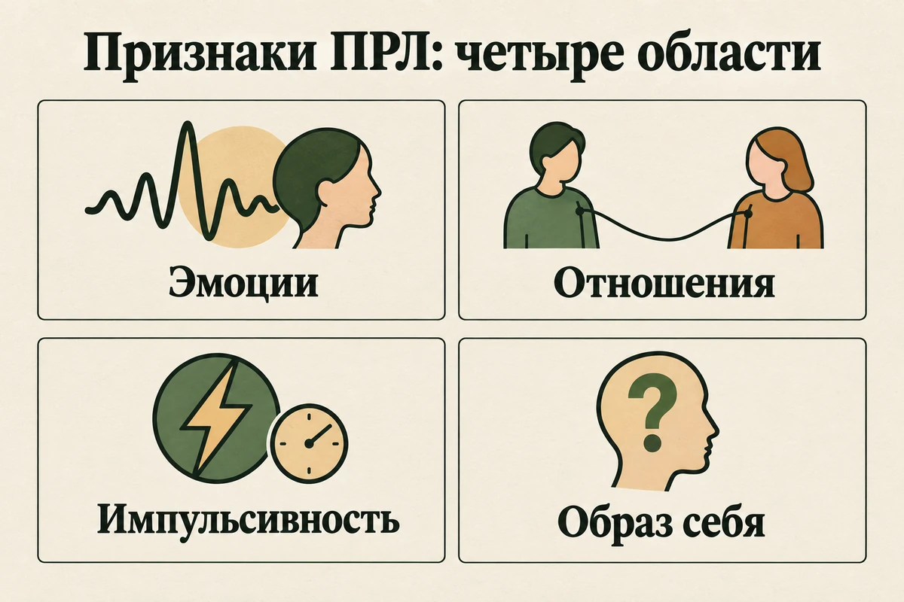
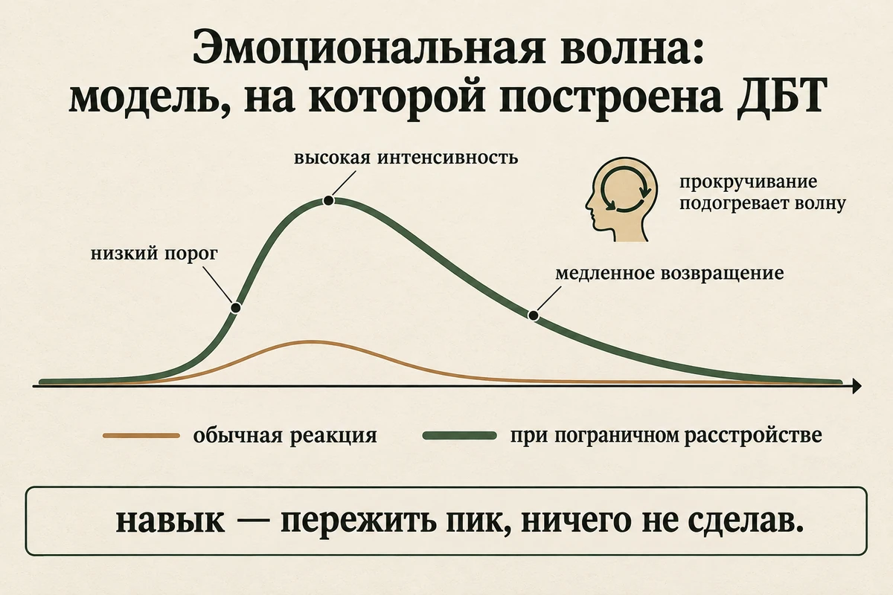
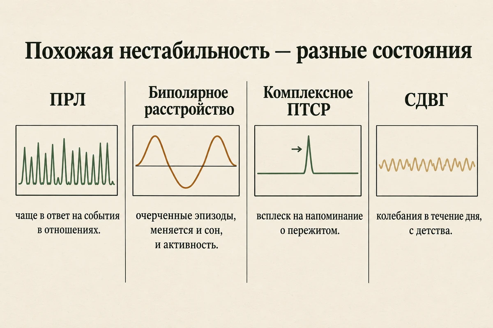
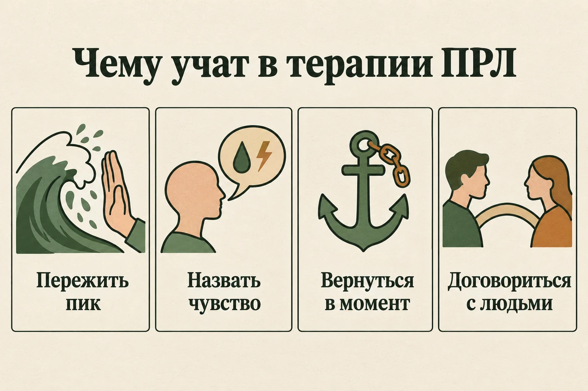
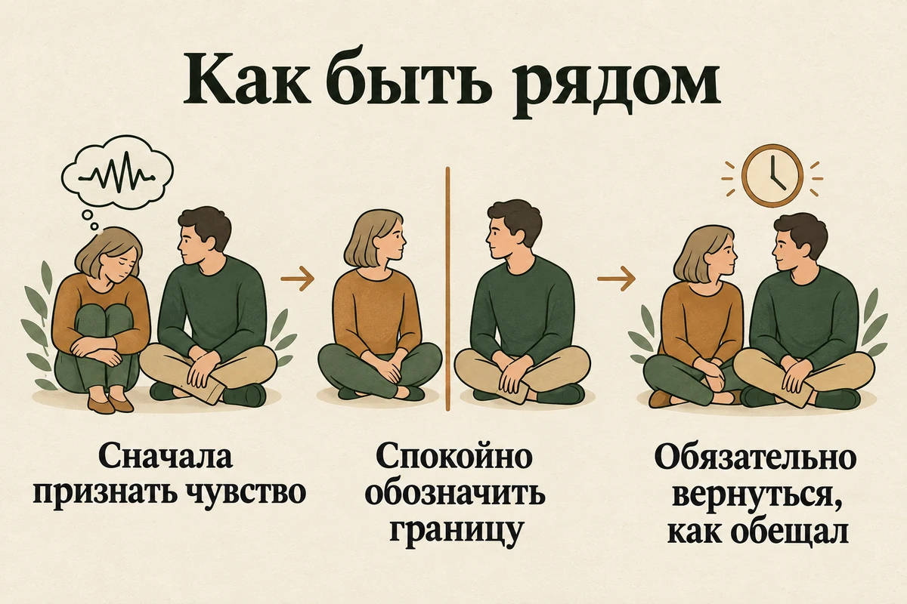

Главная → Блог → Пограничное расстройство личности
Пограничное расстройство личности (ПРЛ): признаки, причины и лечение
Обновлено: 20.09.2026 · Источники проверены: 20.09.2026 · 20 минут чтения

Пограничное расстройство личности (ПРЛ) — это устойчивый способ переживать и действовать, в центре которого нестабильность: эмоций, отношений и представления о себе. Чувства у человека с ПРЛ возникают быстрее и достигают большей силы, чем у большинства людей, и дольше не спадают. Отношения качаются от восхищения до разрыва, а ответ на вопрос «кто я» может меняться от месяца к месяцу. Это не слабость характера и не «просто сложный человек»: расстройство описано в международных классификациях, хорошо изучено и лечится — причём прогноз у него заметно лучше, чем считалось ещё двадцать лет назад. Ниже — как выглядят признаки ПРЛ, чем оно отличается от биполярного расстройства и ПТСР, почему возникает, что реально помогает и как быть тем, кто рядом.
- Что такое пограничное расстройство личности
- Как это переживается изнутри
- Признаки ПРЛ: четыре области
- Почему эмоции накрывают сильнее и дольше
- Чем ПРЛ отличается от биполярного расстройства, ПТСР и СДВГ
- Как ставят диагноз
- Почему возникает ПРЛ
- Мифы и стигма вокруг ПРЛ
- Чем опасно ПРЛ без помощи
- Как лечат пограничное расстройство
- Что можно делать уже сейчас
- Как быть рядом с человеком с ПРЛ
- Можно ли выздороветь
- Куда обращаться в России
- Частые вопросы
Что такое пограничное расстройство личности
Пограничное расстройство личности — это состояние, при котором человеку постоянно трудно регулировать собственные эмоции, и эта трудность затрагивает отношения, поведение и представление о себе. Речь не об отдельном тяжёлом периоде, а об устойчивом рисунке, который держится годами и проявляется в разных сферах жизни.
Само название историческое и мало что объясняет. В середине XX века считалось, что такие пациенты находятся «на границе» между неврозом и психозом. Современная психиатрия так не думает, но термин остался. В МКБ-11 расстройства личности описываются прежде всего по степени тяжести, а «пограничный паттерн» — дополнительная характеристика, которую врач может указать, если рисунок трудностей соответствует этому описанию. В американской классификации DSM-5 ПРЛ по-прежнему выделено отдельным диагнозом.
Насколько это часто. По метаанализу 2025 года, объединившему исследования населения, пограничное расстройство есть примерно у 2,4% взрослых (по разным работам — от 0,7% до 7%). Долгое время считалось, что это «женский» диагноз, но данные по населению показывают более ровное распределение между мужчинами и женщинами, чем данные клиник. Мужчинам его ставят реже: их эмоциональная нестабильность чаще выглядит как злость, алкоголь или рискованное поведение, и попадает под другие ярлыки.
Ещё одна важная деталь: ПРЛ — не «взрослый» диагноз, который сваливается неизвестно откуда. В обзоре в The Lancet (2021) прямо сказано, что связная картина расстройства обычно складывается в подростковом возрасте, после 12 лет, и часто ей предшествуют тревога, депрессия или проблемы с поведением. Раннее распознавание — не приговор подростку, а наоборот, шанс начать помогать вовремя.
Как это переживается изнутри
Описания в классификациях сухие, и по ним трудно узнать себя. Изнутри это обычно выглядит иначе.
Человек живёт с постоянно включённым усилителем чувств. То, что для другого — мелкая неприятность, здесь ощущается как катастрофа: не ответили на сообщение, сказали короткое «ладно», посмотрели мимо. Возникает мгновенная и очень сильная боль, а вместе с ней — понимание, что реакция несоразмерна, и стыд за неё. К исходному чувству добавляется второе: злость на себя за то, что «опять».
Дальше включается то, что снимает напряжение быстро: резкое сообщение, разрыв, алкоголь, трата, самоповреждение. Это работает как обезболивающее — на минуты. А потом приходит раскаяние и страх, что теперь-то человек точно уйдёт.
Отдельная часть — пустота. Не грусть, а именно ощущение, что внутри ничего нет: непонятно, чего хочешь, что тебе нравится, кто ты без другого человека рядом. Из-за этого и рождается то самое цепляние за отношения, которое со стороны читают как манипуляцию. На деле это попытка не исчезнуть.
Признаки ПРЛ: четыре области
NHS группирует проявления пограничного расстройства в четыре области. Такая разбивка удобнее списка критериев: она показывает, что все признаки — следствие одной трудности с регуляцией чувств.
1. Нестабильность эмоций
- Настроение меняется за часы, а не за недели: от подъёма к отчаянию, тревоге или ярости.
- Сила чувства несоразмерна поводу, и человек обычно сам это видит.
- Возвращение к спокойствию занимает намного больше времени, чем у других.
- Долгое, фоновое ощущение пустоты и одиночества.
- Злость, которую трудно остановить, — а потом стыд за неё.
2. Нестабильные отношения
- Сильный страх быть брошенным и отчаянные попытки этого не допустить.
- Отношение к близкому качается от идеализации до разочарования и злости.
- Малейшие признаки холодности читаются как отвержение.
- Одновременное желание максимальной близости и страх, что в ней задушат.
- Резкие разрывы, о которых потом человек жалеет.
3. Импульсивность и самоповреждение
- Поступки, которые быстро снимают напряжение, но потом вредят: траты, алкоголь, рискованное вождение, случайные связи, срывы на еде.
- Самоповреждение как способ прекратить невыносимое чувство.
- Мысли о том, чтобы не жить, особенно на пике отчаяния.
4. Сдвиги в мышлении и восприятии себя
- Неустойчивый образ себя: цели, взгляды, даже вкусы меняются вслед за окружением.
- Мышление «всё или ничего»: человек или прекрасен, или невыносим, середины нет.
- На сильном стрессе — подозрительность, ощущение нереальности происходящего или отстранённости от собственного тела.
- Иногда — короткие эпизоды необычных переживаний, которые проходят вместе со стрессом. NHS советует не игнорировать их и обязательно рассказать о них врачу.

Ни один пункт сам по себе ничего не доказывает. Диагноз ставят не по количеству совпадений в списке, а по устойчивости рисунка: как давно это длится, проявляется ли в разных сферах и нельзя ли объяснить происходящее иначе.
Почему эмоции накрывают сильнее и дольше
У этого есть понятная механика, и её стоит знать, потому что именно на неё направлено лечение. Эмоциональную реакцию при ПРЛ описывают через три особенности.
- Низкий порог. Волна поднимается от того, что другой человек почти не заметит: пауза в разговоре, интонация, непрочитанное сообщение.
- Высокая амплитуда. Чувство достигает такой силы, что мышление буквально сужается: на пике человек не может вспомнить ни одного аргумента против «он меня бросает».
- Медленный спад. Возвращение к исходному состоянию занимает часы вместо минут. А поскольку волны накладываются друг на друга, спокойного «нуля» может не наступать неделями.
Отсюда два практических следствия. Первое: спорить с человеком на пике волны бесполезно — не потому, что он не хочет слушать, а потому, что в этот момент ему физиологически недоступны доводы. Второе: главный навык, которому учат в терапии, — не подавлять чувство, а пережить пик, ничего не сделав. Волна спадает сама; решения, принятые на её вершине, остаются надолго.

Чем ПРЛ отличается от биполярного расстройства, ПТСР и СДВГ
Эмоциональная нестабильность — не уникальная примета пограничного расстройства. Её дают как минимум четыре разных состояния, и именно поэтому самостоятельный вывод здесь особенно рискован: лечатся они по-разному, и ошибка стоит лет.
Биполярное аффективное расстройство
Ключевых различий два — темп и связь с событиями. При биполярном расстройстве настроение меняется эпизодами, которые длятся днями и неделями, и эти эпизоды живут по своей логике, слабо связанной с происходящим вокруг. При ПРЛ переключение занимает часы и почти всегда к чему-то привязано, чаще всего к событию в отношениях. Кроме того, при биполярном расстройстве в фазе подъёма меняется не только настроение, но и потребность во сне, скорость речи, уровень активности.
Комплексное ПТСР
После долгого тяжёлого опыта, особенно в детстве, человек может жить в постоянной готовности к угрозе: вспыхивать, не доверять, резко отдаляться, ощущать себя испорченным. Картины во многом пересекаются, и различить их не всегда просто даже специалисту. Ориентир: при комплексном ПТСР в центре — реакция на пережитое (воспоминания, избегание, ощущение постоянной опасности), при ПРЛ — прежде всего страх быть брошенным и неустойчивый образ себя. Подробнее об этом — в статье о посттравматическом стрессовом расстройстве.
СДВГ у взрослых
Импульсивность и вспыльчивость характерны и для СДВГ. Отличие в том, что при СДВГ они идут в комплекте с трудностями внимания и организации, заметны с детства и проявляются везде — на работе, за рулём, в быту, — а не концентрируются в близких отношениях. Эти состояния к тому же нередко сочетаются. Как выглядит взрослый СДВГ — в отдельном разборе.
Депрессия, выгорание, юность
На фоне депрессии и выгорания раздражительность, пустота и чувство бессмысленности усиливаются, но это состояние, у которого есть начало и конец, а не устойчивый рисунок. У подростков и людей в остром кризисе эмоциональная нестабильность — частое и во многом временное явление, и торопиться с выводами здесь не стоит.
| ПРЛ | Биполярное расстройство | Комплексное ПТСР | |
|---|---|---|---|
| Темп перемен | Часы, иногда минуты | Дни и недели | Реакция на триггер, затем долгий откат |
| Связь с событиями | Почти всегда есть, чаще в отношениях | Слабая, эпизод живёт своей логикой | Есть: напоминания о пережитом |
| Что в центре | Страх быть брошенным, образ себя | Смена уровня энергии и активности | Опасность и её последствия |
| Сон и активность | Меняются вслед за эмоциями | Меняются сами, задолго до настроения | Нарушен сон, кошмары, настороженность |
| Основное лечение | Специализированная психотерапия | Лекарства плюс психотерапия | Терапия, работающая с травмой |

Как ставят диагноз
Диагноз ставит психиатр или психотерапевт на очной консультации — по беседе, а не по опроснику. Анкета может показать, что ваш опыт похож на пограничный паттерн, но отличить расстройство личности от травмы, СДВГ, биполярного расстройства или затянувшегося кризиса она не способна.
На что смотрит врач:
- Длительность. Устойчивый рисунок, а не реакция на последние несколько месяцев.
- Всеохватность. Проявляется в разных сферах и с разными людьми, а не только в одних конкретных отношениях.
- Выраженность последствий. Страдания и трудности в работе, учёбе, отношениях, а не просто «эмоциональный характер».
- Что ещё может это объяснять. Депрессия, ПТСР, СДВГ, биполярное расстройство, употребление психоактивных веществ, эндокринные нарушения.
- Сопутствующие состояния. По данным NIMH, вместе с ПРЛ часто встречаются депрессия, тревожные расстройства, ПТСР, зависимости и расстройства пищевого поведения. Их обычно лечат параллельно.
Отдельный вопрос — подростки. Раньше диагноз откладывали до 18 лет, чтобы «не навешивать ярлык». Современные руководства от этого отходят: признаки складываются в подростковом возрасте, а отказ их называть означает отказ от помощи в тот период, когда она эффективнее всего. При этом у подростков особенно важно не торопиться: бурность чувств в 15 лет сама по себе не диагноз.
Почему возникает ПРЛ
Единственной причины нет. Это самый честный ответ, и он же самый полезный: он снимает поиск виноватого, который обычно заканчивается тем, что человек винит себя или родителей, а помощь откладывается.
Наследуемые особенности
Склонность к сильным и быстрым эмоциональным реакциям во многом врождённая. В исследованиях близнецов наследуемость пограничных черт оценивают примерно в половину — то есть около половины различий между людьми объясняется генетическими факторами. Это не «ген ПРЛ», а темперамент: чувствительность, скорость реакции, трудность торможения импульса.
Среда, в которой чувства обесценивали
Вторая половина — опыт. Чаще всего речь об окружении, где переживания ребёнка систематически отменяли: «не выдумывай», «тебе не больно», «прекрати истерику». Ребёнок в такой среде не учится двум вещам: называть своё состояние и успокаивать себя. Сюда же относится и более тяжёлый опыт — насилие, пренебрежение, долгий страх, тяжёлая болезнь или зависимость у близкого взрослого.
Связь с детским опытом в исследованиях очень сильная: по метаанализу 97 работ, люди с ПРЛ примерно в 14 раз чаще сообщают о тяжёлом детском опыте, чем люди без психических расстройств, причём сильнее всего связаны эмоциональное насилие и пренебрежение. Подробнее о том, как этот опыт работает во взрослой жизни, — в статье о детских травмах.
Как это работает в мозге
NHS описывает находки осторожно: у многих людей с ПРЛ на снимках отличаются области, связанные с переживанием эмоций и контролем импульса, — миндалина, гиппокамп, орбитофронтальная кора. Это описание, а не объяснение: по снимку диагноз не ставят, и «поломки» в буквальном смысле там нет. Важно другое: то, как эти области работают, меняется под влиянием опыта — в том числе опыта терапии.
Мифы и стигма вокруг ПРЛ
ПРЛ — один из самых стигматизированных диагнозов, причём не только в быту, но иногда и среди специалистов. Стигма имеет прямое практическое следствие: человек не обращается за помощью или получает формальную отписку вместо лечения.
«Они манипуляторы»
Самый частый и самый вредный миф. Поведение, которое со стороны выглядит как манипуляция, обычно является грубым, но единственным доступным способом справиться с невыносимым чувством и не остаться одному. Манипуляция предполагает расчёт; здесь чаще всего действует паника. Из этого мифа растёт практика «не идти на поводу», при которой человека наказывают холодом ровно за то, ради чего он и обратился.
«Это неизлечимо, с ними невозможно работать»
Взгляд устарел лет на двадцать. Как отмечают авторы обзора в The Lancet, раньше расстройство считали не поддающимся лечению, но прогресс в понимании и методах привёл к более ранней диагностике и лучшим результатам. Сегодня ПРЛ — одно из тех расстройств, где психотерапия работает доказанно.
«Самоповреждение — способ привлечь внимание»
Чаще всего это способ прекратить невыносимое состояние: физическая боль на короткое время перебивает душевную. Реагировать на это как на спектакль опасно — риск для жизни при ПРЛ реален и не зависит от того, «напоказ» это или нет.
«Диагноз — клеймо на всю жизнь»
Диагноз описывает состояние, а не человека, и он не вечен: значительная часть людей со временем перестаёт соответствовать его критериям. Практическая польза от названия обычно больше вреда: оно открывает доступ к тем методам, которые для этого состояния и созданы.
Чем опасно ПРЛ без помощи
Главный риск — суицидальный. В метаобзоре World Psychiatry, обобщившем данные по смертности при психических расстройствах, пограничное расстройство личности названо среди состояний с наиболее высоким риском самоубийства — наряду с депрессией, биполярным расстройством и нервной анорексией. Это не повод для паники, а довод против откладывания помощи: именно суицидальное поведение и самоповреждение лучше всего отвечают на специализированную терапию.
Остальные последствия накапливаются медленно и именно поэтому недооцениваются:
- разрушенные отношения и вслед за ними — изоляция, которая усиливает страх быть брошенным;
- прерванная учёба и нестабильная работа, а вместе с ними финансовые трудности;
- алкоголь и вещества как способ выключить чувство;
- сопутствующие депрессия, тревожные расстройства и расстройства пищевого поведения;
- телесные последствия хронического стресса и бессонницы.
Когда эмоции накрывают, трудно объяснить происходящее даже близким — а иногда рядом просто никого нет в четыре утра. В AI Therapist можно анонимно проговорить, что происходит, и собраться с мыслями перед визитом к специалисту. Это не лечение и не замена терапии, но иногда помогает не остаться с волной один на один.
Как лечат пограничное расстройство
Основное лечение ПРЛ — психотерапия, и довольно длительная. Это не «поговорить о детстве»: специализированные программы устроены как обучение конкретным навыкам и рассчитаны на месяцы и годы.
Что говорят исследования
Самый крупный свод данных — Кокрейновский обзор 2020 года: 75 исследований и более 4500 участников. Психотерапия оказалась эффективнее обычного лечения по тяжести симптомов ПРЛ, самоповреждению и суицидальному поведению; отдельно отмечены диалектическая поведенческая терапия (тяжесть симптомов, самоповреждение, социальное функционирование) и терапия на основе ментализации (самоповреждение, суицидальность, депрессия). Авторы честно оговаривают, что качество доказательств пока невысокое, а эффект — умеренный. Это означает «работает, но не мгновенно и не у всех одинаково», а не «бесполезно».
Диалектическая поведенческая терапия (ДБТ)
Метод, созданный специально для людей с сильной эмоциональной нестабильностью и повторяющимся самоповреждением. Британские рекомендации NICE CG78 советуют рассматривать полноценную программу ДБТ, когда приоритет — снизить повторяющееся самоповреждение. Программа обычно включает индивидуальные сессии, группу навыков и возможность связаться с терапевтом в кризис. Учат четырём группам навыков:
- переносить дистресс — пережить пик, не усугубив ситуацию;
- регулировать эмоции — замечать, называть и снижать интенсивность чувства;
- осознанности — возвращаться в текущий момент из бури мыслей;
- межличностной эффективности — просить, отказывать и сохранять отношения.
Другие признанные подходы
ДБТ изучена лучше всех, но она не единственная. Терапия, основанная на ментализации, учит понимать собственные состояния и состояния другого человека — особенно тогда, когда эмоции зашкаливают. Схема-терапия работает с устойчивыми паттернами, сложившимися в детстве. Терапия, сфокусированная на переносе, использует сами отношения с терапевтом как материал для работы. Приёмы когнитивно-поведенческой терапии входят в большинство программ как строительный материал.
Лекарства
Здесь рекомендации NICE сформулированы необычно прямо: лекарства не должны применяться специально для лечения пограничного расстройства или его отдельных симптомов — ни для самоповреждения, ни для эмоциональной нестабильности, ни для рискованного поведения. Антипсихотики не рекомендованы для средне- и долгосрочного лечения. Лекарства уместны при сопутствующих состояниях — например, при депрессии или тревожном расстройстве, — а в кризисе допускается короткое назначение успокаивающего средства, обычно не дольше недели. Если препаратов накопилось много и назначены они «от нестабильности», рекомендация — пересмотреть схему вместе с врачом.
И ещё одно важное указание оттуда же: короткие программы психотерапии длительностью менее трёх месяцев не рекомендуются как самостоятельное лечение ПРЛ. Пять консультаций «для стабилизации» — не лечение пограничного расстройства.

Что можно делать уже сейчас
Самопомощь не заменяет терапию, но время до первого приёма тоже нужно как-то прожить. Эти шаги взяты из логики ДБТ и не требуют подготовки.
- Научитесь замечать подъём волны. У неё почти всегда есть телесные предвестники: сжатие в груди, жар в лице, ком в горле, участившееся дыхание. Чем раньше вы их поймаете, тем больше выбора остаётся. Полезно неделю записывать: что случилось, что почувствовал, насколько сильно от 0 до 10, что сделал.
- Держите под рукой три способа пережить пик. Холодная вода на лицо или в ладони, короткая интенсивная нагрузка (быстро подняться по лестнице), медленный выдох длиннее вдоха. Это не психология, а физиология: такие приёмы снижают возбуждение и дают те самые несколько минут.
- Введите правило суток. Никаких необратимых решений на пике: не увольняться, не расставаться, не отправлять сообщение, не удалять аккаунты. Если решение верное, оно останется верным и завтра. Черновик можно написать и не отправлять.
- Проверяйте интерпретацию, а не доверяйте ей. «Он молчит» — факт. «Он меня бросает» — догадка. Спросить прямо: «Ты на меня сердишься? Мне тревожно от молчания» — почти всегда дешевле, чем действовать по догадке.
- Снижайте уязвимость. Недосып, голод, похмелье и боль делают волну выше, а торможение слабее. Сон и еда по расписанию звучат скучно, но реально уменьшают количество срывов.
- Составьте план кризиса заранее. На листе: кому позвонить, какие три вещи сделать, номера служб, что говорить себе. В остром состоянии придумывать это невозможно, а читать — можно.
- Ищите специалиста прицельно. На первой консультации спросите, работает ли специалист с эмоциональной регуляцией, знаком ли с ДБТ, ментализацией или схема-терапией. Это нормальный вопрос, и адекватного специалиста он не обидит.
Если главным проявлением у вас оказываются вспышки злости, из-за которых потом стыдно, полезен отдельный разбор о том, как перестать срываться. А если тяжелее всего даётся страх потерять близкого и зависимость от его настроения — посмотрите статью об эмоциональной зависимости.
Как быть рядом с человеком с ПРЛ
Близким обычно достаётся не меньше, и советы «просто поддерживайте» здесь не работают. Работают предсказуемость и спокойные границы.
- Сначала признайте чувство, потом обсуждайте факты. «Вижу, тебе сейчас очень плохо» — не согласие с обвинениями, а способ снизить накал. Пока волна на пике, доводы не доходят.
- Не спорьте о том, «правда ли это так страшно». Переживание уже есть; обесценивание его усиливает, потому что повторяет ту самую детскую ситуацию отмены чувств.
- Границы обозначайте заранее и держите ровно. «Я не могу говорить на повышенных тонах, давай вернёмся через час» — это не наказание и не уход. Важно вернуться через час, как и обещали: предсказуемость лечит страх брошенности лучше любых заверений.
- Не принимайте решений на пике ссоры. Правило суток работает в обе стороны.
- Не берите на себя роль терапевта. Вы не обязаны быть круглосуточной службой поддержки, и попытка ею стать заканчивается выгоранием и разрывом — то есть подтверждением главного страха.
- Относитесь к разговорам о смерти серьёзно каждый раз. Прямой вопрос «ты думаешь о том, чтобы покончить с собой?» не подталкивает к поступку — он открывает разговор.
- Позаботьтесь и о себе. Своя терапия, свой круг общения, свои дела вне этих отношений — это не эгоизм, а условие, при котором вы сможете оставаться рядом долго.
NICE отдельно рекомендует включать семью и близких в помощь — с согласия самого человека — и давать им доступ к информации и группам поддержки. Понимание механики со стороны близких заметно снижает количество конфликтов.

Можно ли выздороветь
Да, и это самая обнадёживающая часть темы. NHS формулирует прямо: со временем многие люди с пограничным расстройством преодолевают симптомы и выздоравливают.
Точнее всего картину показывает 16-летнее наблюдение исследовательской группы Маклин-госпиталя, где за 290 пациентами следили с интервалом в два года. К концу наблюдения ремиссии — то есть состояния, при котором человек уже не соответствует критериям диагноза, — достигли от 78% до 99% участников в зависимости от того, насколько долгую ремиссию требовали засчитать. Симптомы уходят, и уходят у большинства.
Но у той же работы есть вторая половина, о которой честнее сказать сразу. «Выздоровление» в строгом смысле — это ремиссия плюс устойчивая работа и нормальные социальные связи — наступило у 40–60%. И рецидивы случаются: от 10% до 36% возвращались симптомы. Иными словами, тяжёлая симптоматика отступает раньше, чем восстанавливается жизнь вокруг неё, и работа с социальной стороной — отдельная задача, которую стоит держать в фокусе терапии.
Что улучшает прогноз: раннее начало лечения, специализированная (а не любая) психотерапия, работа с сопутствующими состояниями, отказ от алкоголя как способа регуляции и хотя бы одна устойчивая опора в окружении.
Куда обращаться в России
Диагностикой и лечением занимается психиатр или психотерапевт. Бесплатно попасть к нему можно по полису ОМС — в психоневрологическом диспансере по месту жительства, а начать можно с направления от терапевта. Обращение к психиатру само по себе не означает «постановку на учёт»: обычная консультативная помощь никак не ограничивает права, а диспансерное наблюдение назначается только при тяжёлых хронических состояниях и решением врачебной комиссии. Подробный разбор этого вопроса и список бесплатных служб — в справочнике помощи.
Для психотерапии ищите специалиста прицельно: по ключевым словам «диалектическая поведенческая терапия», «терапия, основанная на ментализации», «схема-терапия». Психолог без медицинского образования диагноз не ставит, но вести долгую работу по этим методам может.
Частые вопросы
Что такое пограничное расстройство личности простыми словами?
Это устойчивый, многолетний способ переживать и действовать, в центре которого нестабильность: эмоций, отношений и представления о себе. Чувства возникают быстрее и сильнее, чем у большинства людей, и дольше не спадают; отношения качаются от близости к разрыву; ответ на вопрос «кто я» может меняться от месяца к месяцу. Это не черта характера и не дурное воспитание, а состояние, которое описано в международных классификациях и лечится.
Чем ПРЛ отличается от биполярного расстройства?
Главное отличие — в темпе и в том, от чего зависят перемены. При биполярном расстройстве настроение меняется эпизодами длиной в недели, и они мало связаны с тем, что происходит вокруг. При пограничном расстройстве эмоции переключаются за часы и обычно в ответ на события в отношениях: отказ, холодный тон, молчание. Различить эти состояния может только врач, потому что лечатся они по-разному.
Виноваты ли родители в том, что у человека ПРЛ?
Однозначно указать виноватого нельзя. Люди с пограничным расстройством чаще сообщают о тяжёлом детском опыте, но у расстройства не бывает единственной причины: вклад вносят и наследуемые особенности темперамента, и среда, а исследования близнецов показывают, что связь детской травмы с пограничными чертами частично объясняется общими семейными и генетическими факторами. Многие люди с ПРЛ выросли без насилия, и наоборот.
Можно ли вылечить пограничное расстройство личности?
Прогноз гораздо лучше, чем принято думать. В длительных исследованиях большинство людей с ПРЛ со временем перестают соответствовать критериям диагноза, и NHS прямо пишет, что многие преодолевают симптомы и выздоравливают. Труднее и дольше восстанавливается не симптоматика, а жизнь вокруг неё — работа и устойчивые отношения. Основное лечение — длительная специализированная психотерапия.
Как общаться с человеком с пограничным расстройством?
Помогают предсказуемость и спокойные границы, а не попытки переспорить чувство. Признайте эмоцию, прежде чем обсуждать факты, говорите заранее и прямо о том, чего ждать, и не принимайте решений на пике ссоры. Границы стоит обозначать заранее и держать без наказания и без чувства вины. Заботиться о близком не значит быть его терапевтом.
К какому врачу обращаться при подозрении на ПРЛ?
Диагноз ставит психиатр или психотерапевт на очной консультации, в России это можно сделать бесплатно по полису ОМС. Обращение к психиатру само по себе не означает «постановку на учёт». Для психотерапии стоит искать специалиста, который работает с диалектической поведенческой терапией, терапией на основе ментализации или схема-терапией.
Как подготовлен материал. Текст подготовлен редакцией AI Therapist. Мы опираемся на описание расстройств личности в МКБ-11, материалы NHS и NIMH, клинические рекомендации NICE и рецензируемые обзоры и метаанализы; цифры приводим по первоисточникам и ставим ссылки рядом с ними. Материал носит просветительский характер и не заменяет консультацию врача: расстройство личности может определить только специалист на очной консультации.
Источники: МКБ-11, ВОЗ — расстройства личности и пограничный паттерн (6D10, 6D11.5), NICE CG78 — Borderline personality disorder: recognition and management, NHS — Borderline personality disorder, NIMH — Borderline Personality Disorder, Bohus M. et al. «Borderline personality disorder», The Lancet, 2021, Storebø O. J. et al. «Psychological therapies for people with borderline personality disorder», Cochrane Database of Systematic Reviews, 2020, Zanarini M. C. et al. «Attainment and stability of sustained symptomatic remission and recovery», American Journal of Psychiatry, 2012, Ramos-Suárez I. et al. «Epidemiology of borderline personality disorder in the general population», Journal of Affective Disorders, 2026, Porter C. et al. «Childhood adversity and borderline personality disorder: a meta-analysis», Acta Psychiatrica Scandinavica, 2020, Skaug E. et al. «Childhood trauma and borderline personality disorder traits: a discordant twin study», Journal of Psychopathology and Clinical Science, 2022, Chesney E. et al. «Risks of all-cause and suicide mortality in mental disorders», World Psychiatry, 2014.
Кто отвечает за содержание сайта и по каким правилам мы готовим материалы — на странице о проекте.
Читать также
- Самопроверка на пограничные черты — 15 вопросов об эмоциях, отношениях и отношении к себе, результат сразу и без регистрации.
- Эмоциональная зависимость в отношениях — если главное переживание это страх потерять близкого.
- Вспышки гнева: как перестать срываться — разбор механики вспышки и семь шагов.
- Детские травмы у взрослых — как опыт, в котором чувства обесценивали, продолжает работать сейчас.
- ПТСР: признаки и лечение — состояние, которое чаще всего путают с пограничным.
- Схема-терапия — один из подходов, признанных при пограничном расстройстве.